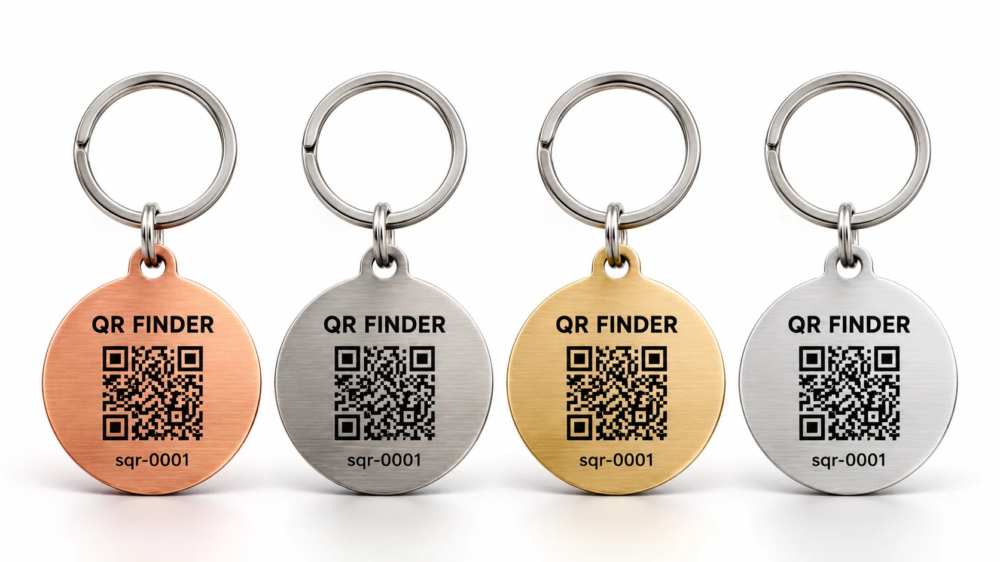

QR FINDER
From a simple metal tag to a wider system of practical ways to connect physical objects with useful information.
QR FINDER
Created and developed by me · Preparing for public launch.
Someone finds what you have lost. What happens next?
Keys left in a café. A suitcase misplaced during a journey. A dog that runs off during a walk. Each situation is different, but the problem is often the same: even when somebody finds the missing item, they may not know how to reach its owner.
That simple problem led me to develop QR FINDER. I started with carefully designed metal tags and wanted to offer more than a phone number engraved permanently into the surface.
The idea grew into a system connecting tags and stickers with digital profiles and a mobile-friendly web platform.


Design preview · four materialsHow does it work?
Finder View opens when someone scans the tag. For a publicly shared profile, the finder can see selected details and a way to contact the owner without installing an app or creating an account.
Phone numbers and information about a tagged pet or belonging can be updated without replacing the metal tag or sticker.
The owner controls which additional information is visible and which remains private.
A scan can show a “Reported lost” notice. If notifications are enabled, the owner can receive an alert with the scan date and time. Location is shared only when the finder chooses to provide it.
An example: a pet's profile
Imagine someone finds your dog. They may not know its habits or whether it needs medication. The detailed free pet profile lets owners record useful information such as appearance, behaviour, microchip details and important health or veterinary notes — while choosing which additional details are shared with the finder.
It was QR FINDER's first and most detailed free application. But the system has grown far beyond pets.
Information stickers for everyday things
QR FINDER has expanded to include information stickers that can be used to label and organise all kinds of belongings — from equipment and bicycles to household items and objects that need instructions, photographs or a record of their history.
Depending on the profile, these digital records can include photographs, a scan counter and handy tools such as a calendar, calculator and notepad. Some extended record-keeping features form part of the separate premium Books offering, rather than the basic free profile.
Two sharing options make the stickers useful in different situations: a public sticker, whose selected information can be viewed by anyone who scans it, and a private sticker, which protects access with a password.
A larger format for cars — and other ideas
I have also developed large-format sticker designs for cars and other applications where the code should be easier to notice and scan from further away, depending on the conditions.
There are more ideas I would like to explore. As they take shape, I will share updates on the products and features being developed.
Why I created QR FINDER
I cannot promise that every lost pet or belonging will be recovered. A QR FINDER tag is not a GPS tracker. But sometimes the most useful thing is simply to give another person an easy way to help.
That is the idea behind QR FINDER: a small connection between a physical object and the information someone may need at just the right moment.
QR FINDER remains in final preparation. The official website and online shop are not yet open to the public; the launch will be announced in advance. The images of the metal tags are design previews.
QR FINDER enquiries